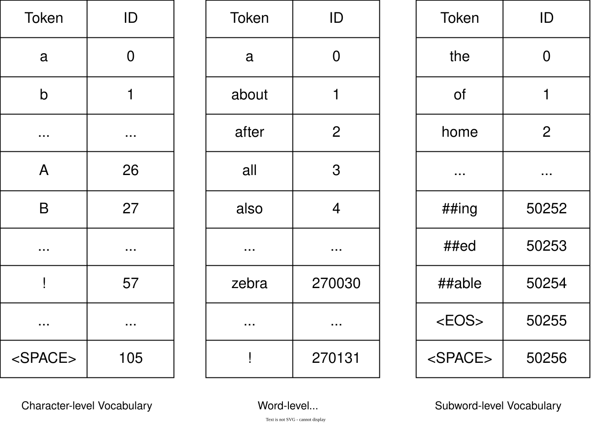
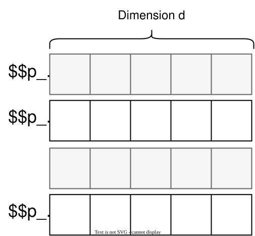
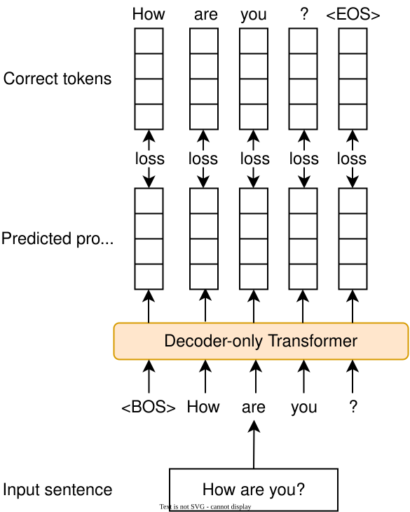
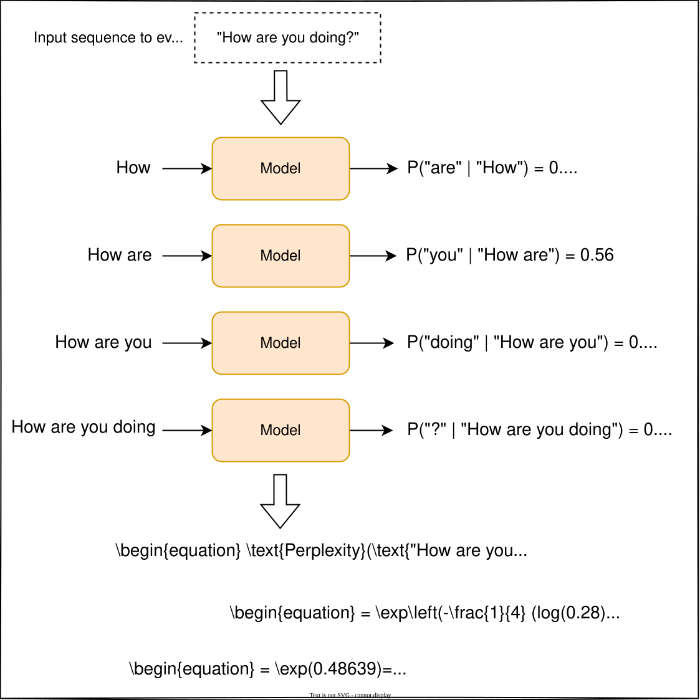

Gmail Smart Compose
Introduction
Gmail's Smart Compose feature [1] assists users by suggesting the next few words as they write an email. This chapter explores this feature and examines the Transformer architecture that powers most generative systems.
![Image represents a Gmail compose window showing an email being drafted. The window's title bar displays 'Taco Tuesdays' and close ('X') buttons. Below, the 'To' field shows 'Ethan Clarke' as the recipient. A 'Cc Bcc' field is also visible, though empty. The 'Subject' line reads 'Taco Tuesdays.' The email body begins with 'Hey Ethan!' followed by 'What's up? Haven't seen you for a whil...' A small, rectangular 'tab' button is present at the end of this line. A curved, reddish-brown arrow originates from near the 'tab' button and points to the text 'Suggested words' outside the email window, indicating that the 'tab' button likely triggers a suggestion of words to complete the sentence, providing contextual word completion or auto-suggestions based on the existing text. The Gmail logo is visible in the top left corner.](images/genai-ch02-gmail-smart-compose-img-51307f54.svg)
Clarifying Requirements
Here is a typical interaction between a candidate and an interviewer:
Candidate: Different users might have different writing styles. Is the system expected to make personalized suggestions?
Interviewer: For simplicity, let's not include personalization.
Candidate: Should the system suggest the next few words only when it is confident in its prediction?
Interviewer: Yes.
Candidate: The email dataset must be sufficiently large to train a model. Do we know the approximate size of the data?
Interviewer: Assume our dataset consists of around one billion email messages.
Candidate: There are different parts of data to utilize when making suggestions. For example, a user's past emails or the subject of the current email. To keep it simple, can I only utilize the email's body as the context?
Interviewer: Good point. In practice, though, we use more than what the user has typed in the current email. Let's start by using the body of the email. If we have more time, we can expand the context to include other relevant information.
Candidate: What languages should the system support?
Interviewer: Let's begin with English.
Candidate: Do we need to ensure the system is not biased?
Interviewer: This is an important requirement for this system. The system should not make biased assumptions in providing its suggestions.
Candidate: How many active users does Gmail have? Is the computing cost a concern in this feature?
Interviewer: Gmail has about 1.8 billion users, and a single user can send as many as 500 emails in a day. We do care about the computing costs, but let's focus on developing the system first. We can optimize for efficiency in future iterations.
Candidate: Should the system make real-time suggestions?
Interviewer: Yes. The expected latency should be imperceptible; something around 100 milliseconds should be fine.
Frame the Problem as an ML Task
In this section, we frame the Smart Compose feature as an ML task. This requires us to understand the system's inputs and outputs and choose a suitable ML approach for learning the task.
Specifying the system's input and output
The input to the model is a sequence of words typed by the user. The output is a continuation of that sequence. The model generates the words that the user is likely to type next.
![Image represents a simple data flow diagram illustrating the functionality of a 'Smart Compose System.' The diagram shows an input string, 'Hi John! I hope,' connected via a solid black arrow to a light-orange, rounded-rectangle box labeled 'Smart Compose System.' This box represents the system's processing unit. Another solid black arrow extends from the 'Smart Compose System' box to an output string, 'you are doing well!' The arrows indicate the direction of data flow, showing that the input string is processed by the Smart Compose System, resulting in the output string. A small text note at the bottom of the 'Smart Compose System' box reads 'Text is not SVG - cannot display,' indicating that the box's visual representation is not an SVG image.](images/genai-ch02-gmail-smart-compose-img-13513076.svg)
Choosing a suitable ML approach
Smart Compose generates textual content, so we categorize it as a text generation task. Various ML architectures are designed to process sequential data, which is essential for text generation. Two popular architectures are recurrent neural networks (RNNs) [2] and Transformers [3].
Transformers provide several advantages over RNNs, with two main benefits being:
- Parallelism: In an RNN, computations from one time step are carried forward and used in the next, creating a time-dependent chain of operations. Transformers, on the other hand, can process all input tokens simultaneously through their self-attention mechanism.
- Better handling of long sequences: Transformers use self-attention mechanisms to focus on any part of a sequence, regardless of distance. In contrast, RNNs, struggle with long-range dependencies because of their sequential structure and the vanishing gradient problem.
Due to these advantages, Transformers have shown outstanding performance in text generation tasks and are, thus, used in most generative systems nowadays. Therefore, we chose Transformers to build the Smart Compose feature.
| Feature | RNN (GRU [4], LSTM [5]) | Transformer |
|---|---|---|
| Architecture | Simple | Complex |
| Training efficiency | Inefficient due to sequential processing | Efficient due to parallel processing |
| Effectiveness | Low as it struggles with long sequences | High as it handles long sequences |
| Scalability | Limited scalability | Highly scalable |
| Applications | Simple tasks such as time series modeling | Complex tasks such as language completion or translation |
Table 1: Comparison of RNN and Transformer architectures
While Transformers are more parallelizable due to their lack of strict sequential dependencies, their self-attention mechanism has a computational complexity of O(n2), where n is the sequence length. This complexity arises because the self-attention mechanism requires the calculation of attention scores between every pair of tokens in the sequence. Various techniques are introduced to reduce the complexity of attention. To learn more, refer to Group Attention [6] and Flash Attention [7].
Data Preparation
During the data preparation step, we convert raw data into the format expected by the ML model. First, let's briefly review the available data.
Two sources of data are available for training our model: general data and email data. General data includes publicly available text from sources such as books, websites, and social media posts. This data is important for training language models because it contains diverse vocabulary, syntax, and contexts.
![Image represents a digitized page displaying two vertically-aligned columns of text. Each column contains a poem, seemingly from the same source, with line numbers ('6' and '9') marking the end of the first and second stanzas respectively in each column. The left column's poem focuses on the fleeting nature of summer's beauty and the enduring sweetness that remains even in winter. The right column's poem uses musical metaphors to explore the themes of loneliness and the importance of connection, contrasting the solitary life with the vibrant fullness of a family. The poems are presented in a serif typeface, typical of older printed works, with consistent line spacing and justification. No URLs or parameters are visible; the only additional elements are the line numbers, which serve as visual separators within the poems. The two columns are presented side-by-side without any explicit visual connection beyond their shared page layout. The text flows vertically within each column, with each line representing a verse in the respective poem.](images/genai-ch02-gmail-smart-compose-img-0d16995d.png)
The email data, as specified in the requirements, consists of one billion email messages. This data is crucial for the model to learn email writing styles and common phrases used in emails. Table 2 shows a simplified example of email data. In practice, more metadata is stored for each email message.
| Email ID | Sender | Recipient | Subject | Body |
|---|---|---|---|---|
| 4953 | john@gmail.com | mike@yahoo.com | Catchup? | Hey Mike, let's catch up this Sat. … |
| 9356 | kkart@gmail.com | cs382@stanford.edu | Project Deadline | Hi TA, I hope you are well. I am writing to you to … |
Table 2: Example of email data
Raw text in both general data and email data is often noisy and inconsistent, which can degrade the model performance. Additionally, ML models require data to be in a numerical format. For these reasons, raw text has to be prepared using the following two key steps:
- Text cleaning and normalization
- Text tokenization and token indexing
Text cleaning and normalization
Text cleaning
Text cleaning removes unnecessary or irrelevant information. Common methods include:
- Remove non-English text: Use language identification [8] methods such as [9] to identify and remove non-English text from general and email data.
- Remove confidential information: Emails may contain confidential information such as phone and credit card numbers. These details must be removed to prevent the model from learning or exposing them later. We replace personal names, URLs, email addresses, and phone numbers with placeholder characters. For example, replace "john@gmail.com" with "##@gmail.com."
- Remove irrelevant characters or symbols: Remove unnecessary or irrelevant characters and symbols that do not contribute to the meaning. For example, symbols such as "©," "™," or emojis are removed, as they do not typically change the meaning of text.
- Remove duplicated data: Duplicate data refers to identical text from different sources that appear multiple times in the dataset. We remove duplicates to prevent the model from becoming biased and skewing the model's learning process.
Text normalization
Text normalization transforms text into a consistent format. For example, it converts different ways of writing a phone number—such as "(123) 456-7890," "123.456.7890," and "123-456-7890"—into a standard format, for example, "1234567890." Text normalization ensures consistency and reduces complexity in text data.
Next, we convert the raw text into a sequence of numbers through text tokenization and token indexing.
Text tokenization and token indexing
Text tokenization followed by token indexing converts the raw text into a format the Transformer model expects: a sequence of numbers.
![Image represents a data processing pipeline illustrating text tokenization. The pipeline begins with a dashed-line box labeled 'Raw text' containing the text string 'Hi I am Emilie'. A solid arrow points from this box to a light green rounded-rectangle labeled 'Text Tokenization...'. This rectangle represents the process of converting raw text into numerical tokens. Another solid arrow extends from the 'Text Tokenization...' block to a sequence of four adjacent boxes, each containing a number (3, 7, 11, 29). This final sequence is labeled 'Sequence of indices,' indicating that the numbers represent the indices or positions of the tokens in a vocabulary or embedding space. The overall flow shows how raw text is transformed into a numerical representation suitable for machine learning models, where each number corresponds to a specific word or sub-word unit from the input text.](images/genai-ch02-gmail-smart-compose-img-6e4c2409.svg)
Let's examine each step in more detail.
Text tokenization
Text tokenization is the process of splitting text into smaller units called tokens. Figure 5 shows how OpenAI's GPT-4 tokenizes the sentence "Let's go to NYC".1
![Image represents a simple flowchart illustrating the process of tokenization in natural language processing. At the top, a rectangular box contains the input phrase 'Let's go to NYC'. A downward arrow connects this box to a second box labeled 'Tokenization,' indicating that the input phrase will undergo this process. From the 'Tokenization' box, another downward arrow points to a horizontal arrangement of five smaller rectangular boxes. Each of these smaller boxes contains a single token from the input phrase: 'Let,' ''s,' 'go,' 'to,' and 'NYC.' The arrangement visually demonstrates how the 'Tokenization' process breaks down the input sentence into its individual constituent words and punctuation marks, effectively separating the input string into its fundamental units.](images/genai-ch02-gmail-smart-compose-img-f7a15541.svg)
Tokenization can be performed at different levels. For example, "Hello world" can be split into ["Hello", "world"] or ["H", "e", "l", "l", "o", " ", "w", "o", "r", "l", "d"]. Generally, tokenization algorithms are divided into three categories:
- Character-level tokenization
- Word-level tokenization
- Subword-level tokenization
Understanding each tokenization category and its pros and cons is crucial in most ML interviews. Let's delve into them.
Character-level tokenization
Character-level tokenization breaks text down into a set of characters. It is simple to implement, but difficult for the model to learn meaningful representations for each token. For example, it's harder to learn a meaningful representation for the letter "g" than for the word "go," because "go" has a clear meaning, whereas "g" does not. Because of this, character-level tokenization often results in a loss of performance.
![Image represents a flowchart illustrating character-level tokenization. At the top, a rectangular box contains the text 'Let's go!'. A downward arrow connects this box to the text 'Character-level tokenization,' indicating the process's starting point. Below this, a series of nine rectangular boxes, resembling keyboard keys, are arranged horizontally. Each box contains a single character from the input string 'Let's go!', representing the individual tokens resulting from the character-level tokenization. The order of characters in the boxes mirrors the order in the input string: L, e, t, ', s, g, o, !. The arrow from 'Character-level tokenization' points to this row of character boxes, showing the output of the process. A small text at the bottom indicates that the image is not an SVG and cannot be fully displayed.](images/genai-ch02-gmail-smart-compose-img-6c10bfb0.svg)
Word-level tokenization
Word-level tokenization breaks text into individual words. While there are different algorithms for word-level tokenization, a simple algorithm is to split the text using its whitespaces.
![Image represents a simple data processing pipeline illustrating word-level tokenization. A rectangular box at the top contains the input text string 'Let's go!'. A downward-pointing arrow connects this input box to a text label 'Word-level tokenization,' indicating a processing step. This processing step outputs two rectangular boxes placed side-by-side, each containing a single token from the input string: 'Let's' in the left box and 'go!' in the right box. The text 'Text is not SVG - cannot display' below the output boxes suggests that the image is a simplified representation and that a more detailed visualization of the tokenization process might be available in a richer format like SVG. The overall flow depicts the transformation of a single input string into individual word tokens.](images/genai-ch02-gmail-smart-compose-img-6cc57d75.svg)
The advantage of word-level tokenization is that it is simpler for the model to learn meaningful representations for each token. However, the main disadvantage of word-level tokenization is that it typically leads to a very large vocabulary size. For example, Transformer-XL [10] uses a word-level tokenizer, resulting in a vocabulary of 267,735 tokens. A large vocabulary size is problematic because the model has to learn representations for hundreds of thousands of tokens. This makes the training time-consuming and, therefore, more costly to train than character-level tokenization.
Let's examine subword-level tokenization which offers a balance between word-level and character-level tokenization.
Subword-level tokenization
Subword-level tokenization splits text into smaller units called subwords. It is based on the principle that a frequently used word should not be split into smaller subwords, but a rare word should be split into smaller meaningful subwords. For example, "unhappily" might be considered a rare word and thus be split into "unhappy" and "ly." Both "unhappy" and "ly" are more frequently used in text data, making it easier for the model to learn a meaningful representation for each.
![Image represents a simple illustration of subword-level tokenization. A top rectangular box contains the input phrase 'Let's go!'. A downward-pointing arrow connects this box to the text 'Subword-level tokenization,' indicating a process is applied. Another downward-pointing arrow leads from 'Subword-level tokenization' to four smaller, rectangular boxes arranged horizontally. Each smaller box represents a token resulting from the tokenization process: 'Let,' ''s,' 'go,' and '!'. The arrangement shows the input phrase being broken down into its constituent subword units, demonstrating how subword tokenization works by splitting words and contractions into smaller meaningful units.](images/genai-ch02-gmail-smart-compose-img-e0a353ee.svg)
While subword-level tokenization can be complex to implement, it has several benefits. First, it leads to a manageable vocabulary size, thus reducing the cost of the model learning representations for each subword. Second, subword-level tokenization allows the model to represent unfamiliar words by decomposing them into known subwords.
Table 3 below compares the characteristics of the three tokenization categories.
| Characteristics | Character-level | Word-level | Subword-level |
|---|---|---|---|
| Granularity | Individual characters | Individual words | Subwords |
| Vocabulary size | Small | Large | Moderate |
| Algorithm complexity | Simple | Simple | Complex |
| Handling unseen words | Decomposes unseen words into characters | Cannot easily handle unseen words | Decomposes unseen words into known subwords |
| Vocabulary size | ~100 | ~300,000+ | ~50,000–150,000 |
| Performance | Poor performance | High performance but not practical | High performance and practical |
Table 3: Comparison between different tokenization categories
Which tokenization is suitable for the Smart Compose feature?
Most state-of-the-art language models use subword-level tokenization algorithms such as Byte-Pair Encoding (BPE) [11] and SentencePiece [12]. These algorithms are more efficient and can effectively handle multiple languages. For example, OpenAI's GPT-4 uses a variant of BPE [13], and Google's Gemini uses SentencePiece [14].
Given the effectiveness of subword-level tokenization, we use it as the text tokenizer for the Smart Compose feature. We rely on popular Python libraries such as Tiktoken [13] by OpenAI or SentencePiece [15] by Google to perform text tokenization. These libraries are implemented reliably and they support various tokenization algorithms.
In Chapter 3, we will dive into BPE and explore its algorithms. To learn more about subword-level tokenization algorithms, refer to [16].
Token indexing
Token indexing is the process of converting textual tokens into integer numbers.
To prepare for token indexing, the tokenization algorithm first builds a vocabulary—a collection of all unique tokens—from the training text data and then stores it in a table. Figure 9 shows examples of vocabularies for different tokenization categories. The order and ID values are chosen arbitrarily for demonstration purposes.

') to unique numerical IDs (0, 1, 26, 27, 57, 105 respectively). The second table, 'Word-level...', shows a mapping of whole words (e.g., 'a', 'about', 'after', 'all', 'also', 'zebra', '!') to IDs (0, 1, 2, 3, 4, 270030, 270131 respectively). The third table, 'Subword-level Vocabulary,' presents a mapping of subword units and special tokens (e.g., 'the', 'of', 'home', '##ing', '##ed', '##able', 'Once the tokenization algorithm has built the vocabulary, we can convert any token into a number and any number back into a token. Figure 10 shows token indexing using the GPT-4 vocabulary [17].
![Image represents a process of tokenization and numerical ID assignment within a GPT-4 vocabulary. The left side shows a flowchart. A rectangular box labeled 'Let's go!' is at the top, pointing downwards to a row of four boxes representing the individual tokens: 'Let,' ''s,' 'go,' and '!'. An arrow then points from the 'go' token to another row of four boxes, each containing a numerical ID: 10267, 596, 733, and 0. These IDs correspond to the tokens above them. The right side displays a table labeled 'GPT-4 Vocabulary,' with two columns: 'Token' and 'ID.' This table shows a partial list of tokens and their corresponding numerical IDs, including the tokens and IDs from the flowchart, illustrating the mapping between text tokens and their numerical representations used internally by the GPT-4 model. The ellipses (...) indicate that the table contains more entries than are shown.](images/genai-ch02-gmail-smart-compose-img-52f987ea.svg)
To summarize the data preparation step, we first clean and normalize the text data to ensure high-quality, consistent text in our training data. Next, we use a subword-level tokenization algorithm such as BPE to tokenize the text into textual tokens (subwords) and then replace each token with its numerical index. These steps ensure our training data is now represented in a numerical format that the ML model can use.
Model Development
The Smart Compose feature is a text generation task in which a Transformer model predicts how email sentences are likely to be completed. In this section, we explore the details of the Transformer architecture, training strategies, and sampling methods to develop the text generation model.
Architecture
The Transformer architecture, introduced in the paper "Attention Is All You Need" [3], is designed to process sequences. This makes it ideal for tasks that require understanding a text and the relationships between its words. For example, in the Smart Compose feature, the model processes the sequence of words already entered by the user so it can suggest the next words.
Transformers have three primary variations:
- Encoder-only
- Decoder-only
- Encoder-decoder
Each variation has minor architectural differences that make them suitable for specific tasks. Let's briefly explore each variation and its applications.
Encoder-only
An encoder-only Transformer is used for tasks that require understanding the overall meaning of a text. It processes the input sequence as a whole and makes predictions about it. For instance, in a sentiment analysis task, an encoder-only Transformer predicts the sentiment of the input sentence.
![Image represents a simplified diagram of a sentiment analysis system. The bottom component, enclosed in a dashed-line box, represents the input text: 'This product is very good'. An arrow points upward from this input text to a larger, light-green, rectangular box labeled 'Encoder-only Transformer,' indicating that the input text is processed by this transformer model. The transformer likely encodes the input text into a numerical representation suitable for sentiment analysis. Finally, another upward-pointing arrow connects the output of the 'Encoder-only Transformer' to a small, square box labeled 'Sentiment: 1,' signifying that the model has assigned a sentiment score of '1' (presumably positive, given the input text) to the input sentence. The overall flow demonstrates the process of inputting text, transforming it using an encoder-only transformer, and generating a numerical sentiment score as output.](images/genai-ch02-gmail-smart-compose-img-b85d675a.svg)
Encoder-only Transformers are commonly used for tasks such as sentence classification and named entity recognition, which focus on understanding the input rather than generating new content. Google's BERT [18] is a well-known example of an encoder-only Transformer. However, these models are not typically used to generate new sequences. Decoder-only Transformers, on the other, are specifically designed for that purpose.
Decoder-only
A decoder-only Transformer processes the input sequence and generates a new sequence iteratively.
![Image represents a simplified architectural diagram focusing on a decoder-only Transformer model. The central element is a rectangular box with a peach/light-orange fill and a gold border, clearly labeled 'Decoder-only Transformer.' This box represents the core of the generative AI system. Above and below this central box are dashed-line rectangles, representing unspecified input and output components respectively. No arrows or explicit connections are shown between these components and the decoder-only Transformer, implying a general flow of information: unspecified input feeds into the decoder-only Transformer, which then produces an unspecified output. The lack of detail in the input and output boxes suggests a focus on the core Transformer architecture itself, rather than the specifics of data ingestion or post-processing.](images/genai-ch02-gmail-smart-compose-img-109fff7e.png)
Decoder-only Transformers are widely used in generative tasks including text generation, where the model generates a sequence one token at a time based on the previously generated tokens. Most large language models (LLMs), such as OpenAI's GPT-4 [19], Meta's LLaMA [20], and Google's Gemini [14], are based on a decoder-only Transformer.
Encoder-decoder
The encoder-decoder architecture utilizes both encoder-only and decoder-only Transformers. An encoder component processes the input sequence and a decoder uses that processed information to generate the output sequence.
![Image represents a simplified diagram of a machine translation system. A light-green rectangle labeled 'Encoder-only...' represents an encoder component of a neural machine translation model, which takes as input an English sentence 'I am graduating' enclosed in a dashed-line box labeled 'English:'. An arrow indicates the flow of information from the English sentence to the encoder. A light-orange rectangle labeled 'Decoder-only...' represents a decoder component, receiving the output from the encoder. An arrow shows the data flow from the encoder to the decoder. Finally, an arrow points from the decoder to a dashed-line box labeled 'Japanese:' containing the Japanese translation '私は卒業します'. This illustrates the translation process: the encoder processes the English input, and the decoder generates the Japanese output.](images/genai-ch02-gmail-smart-compose-img-93c8b375.svg)
An encoder-decoder Transformer is particularly suited for tasks where the output is a transformation of the input. For example, in a language translation task, the input sentence in one language is transformed into an equivalent sentence in another language. We'll examine this architecture in Chapter 3.
Figure 14 below shows commonly used models that employ different variations of Transformers.
![Image represents a classification of different transformer-based language models based on their architecture. The diagram starts with a central node labeled 'Transformer,' branching into three main architectural types: 'Encoder-only,' 'Decoder-only,' and 'Encoder-decoder.' The 'Encoder-only' branch connects to 'Meta's RoBERTa' and 'Google's BERT.' The 'Decoder-only' branch connects to 'OpenAI's GPT,' 'Anthropic's Claude,' 'Meta's LLaMA,' 'xAI's Grok,' and 'Google's Gemini.' Finally, the 'Encoder-decoder' branch connects to 'Meta's BART' and 'Google's T5.' Each line represents a specific language model, indicating its architectural classification within the broader transformer family. The arrangement visually demonstrates the relationships between different models and their underlying architectural designs.](images/genai-ch02-gmail-smart-compose-img-b32635ab.svg)
Which Transformer variation is suitable for the Smart Compose feature?
The choice between encoder-only, decoder-only, and encoder-decoder Transformer models depends on whether the nature of the task is generation or understanding. Smart Compose is a text generation task that aims to complete a partially written text. Therefore, a decoder-only Transformer is ideal for this task due to its ability to generate text based on a given sequence.
ML system design interviews typically focus on high-level concepts and component interactions rather than architectural details. We'll provide a brief overview of the Transformer architecture without going too deep. For a deeper understanding of Transformer architectures, refer to [21] and [22].
A decoder-only Transformer consists of the following components:
- Text embedding
- Positional encoding
- Transformer
- Prediction head
Text embedding
The text embedding component converts each token ID into a fixed-length vector called an "embedding." Embeddings are typically stored in a table, as shown in Figure 15, and learned during the training process.
![Image represents a process of token embedding. On the left is a vocabulary table with two columns: 'Token' and 'ID'. The 'Token' column lists example words or symbols (!, ', go, etc.), while the 'ID' column assigns a unique numerical identifier to each token (0, 1, 733, etc.). This table is labeled 'Vocabulary'. To the right is an 'Embedding table...', which is a matrix containing numerical values (e.g., 0.25, 0.10, 0.75, etc.). Curved arrows connect the vocabulary table to the embedding table. Specifically, an arrow labeled 'Token 0 embedding' connects the ID '0' from the vocabulary table to the first row of the embedding table, indicating that the embedding for token '!' (ID 0) is the vector [0.25, 0.10, 0.75]. Similarly, an arrow labeled 'Token 1 embedding' connects the ID '1' to the second row of the embedding table, showing the embedding for token ''' (ID 1) as the vector [0.18, -0.9, 0.34]. The embedding table represents a vector representation of each token from the vocabulary, where each row corresponds to a unique token ID and contains its embedding vector.](images/genai-ch02-gmail-smart-compose-img-c6ffc7ad.svg)
The text embedding is crucial in a decoder-only Transformer. Let's understand why.
During data preparation, we tokenized the text and converted tokens to IDs. However, there are two significant limitations in how the text is represented:
- Sparsity: The vocabulary typically includes tens of thousands of token IDs. Representing these IDs using one-hot encoding results in sparse, high-dimensional data, which is inefficient.
- Lack of semantic information: Token IDs are arbitrary and do not capture any relationships between words. For example, the words "happy" and "joyful" might be close in meaning, but their token IDs may not reflect this similarity.
The text embedding component addresses both of these limitations by converting token IDs into learned embeddings. Since the embeddings are dense vectors in a lower-dimensional space, sparsity is no longer a concern.
In addition, since the embeddings are learned during model training, they capture semantic meanings. For example, the embeddings for "happy" and "joyful" will be closer together in the embedding space than those for "happy" and "sad," as shown in Figure 16.
![Image represents a two-dimensional scatter plot with axes labeled X1 and X2. The plot displays various words categorized into two distinct clusters. The first cluster, encircled in red, is positioned towards the lower left and contains the words 'Sad' and 'Angry.' The second cluster, also encircled in red, is located towards the upper right and includes the words 'Joyful' and 'Happy.' The remaining words—'Orange,' 'Apple,' 'Strawb...' (presumably 'Strawberry'), 'Cat,' 'Dog,' 'Car,' 'Bicycle,' and 'Bus'—are scattered across the plot, not clearly belonging to either cluster, suggesting they represent a different dimension or category not directly related to the emotional states represented by the clustered words. There are no explicit connections or information flow lines drawn between the words; their positions relative to each other and the axes implicitly suggest a relationship based on an unspecified underlying data set.](images/genai-ch02-gmail-smart-compose-img-aab201b8.svg)
Positional encoding
Transformers do not inherently consider the order of input tokens. If we look at the formula for attention,
am, n=exp(qmknd)j=1Nexp(qmknd),
we see that it is permutation-invariant, meaning the attention mechanism doesn't account for token positions in the sequence. For instance, the Transformer cannot differentiate between "initialize the variable, then use it" and "use the variable, then initialize it." This impacts the model's ability to understand or generate coherent text.
To overcome this limitation, positional encoding provides the Transformer with position information for each token in the input sequence. Without positional encoding, the model treats the input sequence as a bag of words, which is problematic. With positional encoding, each token's position is encoded using a positional encoding function,
pi=f(i),
where f(⋅) is the positional encoding function and i is the position of the token. This allows the model to distinguish between use the variable, then initialize it'' and initialize the variable, then use it."
![Image represents a simplified diagram of a transformer model processing the input text 'I am home'. The bottom layer shows the input text, which is tokenized into three tokens: 'I', 'am', and 'home'. Each token is represented by its corresponding token ID (40, 1097, and 2162 respectively). These IDs are then mapped to their respective token embeddings, which are represented as 3x3 matrices of numerical values (e.g., for 'I': 0.2, 0.5, -0.6; 0.9, -0.1, 0.9). These embeddings are further augmented with positional embeddings (indicated by `$e_.:.token i embedding` and `$p_.:.position i embeddi...`), which provide information about the token's position in the sequence. The combined token and positional embeddings are then fed into the transformer layers (represented by three stacked orange rectangles), which process the information. The output of the transformer (not explicitly shown) would be the model's representation of the input sentence. Arrows indicate the flow of information from the input text through tokenization, embedding, and into the transformer.](images/genai-ch02-gmail-smart-compose-img-2ec4a7a3.svg)
Positional encoding can be achieved through two common methods:
- Fixed positional encoding
- Learned positional encoding
Fixed positional encoding
This method uses a fixed function to map a position (an integer) to a fixed-size vector. The original Transformer paper introduced the sine-cosine function at different frequencies as its positional encoding function.
![Image represents a slide or a section of a document explaining sine-cosine positional encoding. The top line displays the title 'Sine-cosine positional encoding'. Below this title, a partially shown mathematical equation is presented: `$\begin{align*} PE_{(pos, 2i)} &= ...` This equation fragment suggests a formula for calculating positional encoding (PE), where `pos` likely represents the position of a token in a sequence, and `2i` likely indexes a dimension within the encoding vector. The ellipsis (...) indicates that the equation continues beyond what's shown. The equation is written using LaTeX mathematical notation, implying a technical or academic context. The bottom line indicates that the underlying text is not an SVG image, explaining why a visual representation of the equation might be missing. There are no other components, connections, or information flows depicted in the image beyond the title and the partial equation.](images/genai-ch02-gmail-smart-compose-img-79497d2a.svg)
Figure 19 illustrates an example of sine-cosine positional encoding, showing vector representations for four different positions. For simplicity, this example uses a vector dimension of four. In practice, this dimensionality typically matches that of the token embeddings so they can be added together (see Figure 17).
![Image represents a table-like structure displaying the results of a sine and cosine calculation across multiple iterations. The structure is organized into four columns and four rows. Each row represents a different iteration, indicated by the changing subscript in the variable names `$P_{ij}`. The first row initializes two variables, `$P_{00}` and `$P_{02}` to 0, and `$P_{01}` and `$P_{03}` to 1.0. Subsequent rows calculate the sine and cosine of increasing integer values (1, 2, 3...). Specifically, columns 1 and 3 calculate the sine of the iteration number (e.g., `$P_{10} = sin(1...)`, `$P_{20} = sin(2...)`), while columns 2 and 4 calculate the cosine (e.g., `$P_{11} = cos(1...)`, `$P_{21} = cos(2...)`). The numerical results of these calculations are displayed in each cell, showing the computed sine and cosine values for each iteration. The ellipses (...) in the formulas suggest that the actual calculations might involve more complex expressions than just `sin(x)` and `cos(x)`. The `$p_...` prefix before each row seems to be a common identifier for the entire set of calculations.](images/genai-ch02-gmail-smart-compose-img-d60094fd.svg)
Let's take a look at the pros and cons of fixed positional encoding.
Pros:
- Efficiency: Fixed encodings do not add extra trainable parameters to the model. This makes them computationally more efficient.
- Support for long sequences: Fixed methods can map any position into a representation. This flexibility allows the model to handle longer sequences beyond the model's training data.
Cons:
- Predefined limits: Some fixed encoding methods require a predefined maximum position, thus limiting their applicability to sequences below that maximum.
- Suboptimal performance: In certain tasks, fixed encodings may not capture the positional relationships as effectively as learned methods. This can lead to suboptimal performance.
Learned positional encoding
In this method, the positional representations are learned during the training process. Specifically, a weight matrix P∈RN×d is initialized, where N is the maximum sequence length and d is the dimensionality of the embeddings. This matrix P is treated as a trainable parameter, and it is optimized alongside the model's other parameters.

Learned positional encoding has the following pros and cons.
Pros:
- Optimal performance: Since the embeddings are learned based on the training data, learned positional encoding can lead to optimal position representation for the specific task.
Cons:
- Inefficiency: Requires additional parameters to be learned during the training, which can increase the training time and computational cost.
- Lack of generalization: Learned embeddings may overfit to specific sequence lengths seen during training. If the model mainly sees sequences of a certain length during training, it may not effectively represent other positions. This affects the model's ability to generalize across diverse positions.
In summary, the choice between learned and fixed positional encodings depends on the constraints of the task, including the expected variability in sequence lengths. Some papers, including the original Transformer paper, employ fixed positional encoding due to its efficiency and better generalization. Following that, we employ fixed positional encoding, such as sine-cosine encoding, to train the Smart Compose feature.
Transformer
The Transformer component takes a sequence of embeddings as input and transforms them into an updated sequence of embeddings.
![Image represents a diagram of a transformer-based architecture, likely used in a natural language processing (NLP) model. The diagram shows an input sequence represented by three vertical rectangles labeled 'Input sequ...', each representing a sequence element. These feed upwards into two stacked transformer blocks, each containing a 'Multi-head...' layer (represented by an orange rectangle) followed by a 'Feed Forward' layer (represented by a light blue rectangle). The 'Multi-head...' layers likely represent multi-head attention mechanisms, and the 'Feed Forward' layers represent fully connected feed-forward networks. Arrows indicate the flow of information between layers. The output of the second transformer block, also represented by three vertical rectangles labeled 'Output...', is shown at the top, indicating the processed sequence. The dashed lines enclose each transformer block, highlighting their modular structure. The text 'Transformer...' is placed to the left of each transformer block, indicating that the entire block represents a single transformer unit.](images/genai-ch02-gmail-smart-compose-img-5050d5a0.svg)
The Transformer architecture consists of a stack of blocks. Each block contains the following:
- Multi-head attention: This layer updates each embedding by using the attention mechanism. The attention mechanism captures the relationships in the sequence by allowing each embedding to attend to its preceding embeddings. Due to the nature of its mechanism, multi-head attention is commonly known as self-attention, a term we'll use throughout the rest of this book.
- Feed forward: This layer applies two linear transformations, with a ReLU activation in between, to each embedding in the sequence independently.
Transformer architecture includes details such as residual connections, layer normalization, and dropout layers. For a deep understanding of these components, refer to the paper "Attention Is All You Need" [3] and [21].
Prediction head
The prediction head—the final component in a decoder-only Transformer—translates the Transformer's output into probabilities for every token in the vocabulary (Figure 22). These probabilities are used to choose the most likely next token.
![Image represents a diagram illustrating the process of text generation in a language model. At the bottom, the input text 'How are' is fed into a 'Text Embedding' layer, which converts the words into numerical representations. These embeddings are then passed through a 'Positional Encoding' layer, adding information about the word order. The output of this layer is fed into a 'Transformer' layer, the core of the model, which processes the encoded text to understand its meaning and context. The Transformer's output is then passed to a 'Prediction Head,' which predicts the probability of the next word. The diagram shows a sequence of predicted words with associated probabilities: 'you' (0.94 probability) and 'zebra' (0.01 probability), with '<EOS>' (end of sequence) and 'able' (0.04 probability) appearing earlier in the sequence. A curved arrow points from the 'you' prediction to the text '94% probability fo...', indicating that the model assigns a high probability to 'you' as the next word in the sequence. The entire architecture is a bottom-up flow, with information moving from the input text through the layers to the prediction head, which then outputs the predicted words and their probabilities.](images/genai-ch02-gmail-smart-compose-img-6c34860a.svg)
Training
Training adjusts the decoder-only Transformer's parameters using email data. Once the training process is complete, the model can suggest likely completions.
However, directly training the model on a task-specific dataset, such as email data, is not a good strategy. This direct training has several challenges:
- Lack of large training data: Task-specific datasets are usually limited in size. This limitation can hinder the model's ability to learn effectively.
- Risk of overfitting: When a model is trained on a task-specific dataset, it runs a high risk of overfitting. Overfitting occurs when a model memorizes the training data to the extent that it cannot generalize to unseen data.
- Expensive and lengthy training: Training a large model from scratch requires significant computational resources and time. This is because the model has to learn different aspects of language, which is a complex and resource-intensive process.
To address the above issues, a two-stage training strategy is commonly employed: pretraining, followed by finetuning. In the pretraining stage, the model is trained on a large amount of general data to learn the structure of the language. In the finetuning stage, the pretrained model is then finetuned on data specific to the task at hand (e.g., email completion).
This two-stage strategy harnesses a form of transfer learning, as the general knowledge gained during the pretraining stage is transferred to the finetuning stage. This transfer is beneficial because the model doesn't have to start from scratch when learning a new task. Instead, it adjusts its pretrained weights, which is more efficient.
![Image represents a two-stage machine learning model training pipeline. Two cylindrical database icons, labeled 'General...' and 'Email...', represent the source data for the model. Arrows indicate data flow. 'General...' data feeds into a rectangular box labeled '1. Pretraining,' which then outputs to a cloud-shaped box labeled 'Base...'. Similarly, 'Email...' data feeds into a rectangular box labeled '2. Finetuning.' A connection from the 'Pretraining' box to the 'Finetuning' box shows that the output of the pretraining stage is used as input for the finetuning stage. Finally, the 'Finetuning' stage outputs to a cloud-shaped box labeled 'Final...', representing the final trained model. The 'Base...' and 'Final...' labels suggest that these represent intermediate and final model versions, respectively.](images/genai-ch02-gmail-smart-compose-img-731c519a.svg)
Let's take a closer look at each stage and examine the necessary training data, ML objectives, and loss functions for each.
1. Pretraining
Pretraining involves training a model on a large volume of general text data. This data is usually diverse, covering a wide range of topics and language structures. The purpose of pretraining is to develop a model capable of understanding natural language, including syntax, common knowledge, and language structures.
Pretraining data
The pretraining data for this stage usually consists of a large volume of general text data from various sources on the web, such as web pages, books, and social media. For example, Common Crawl [23] is a publicly available dataset collected by crawling a large number of web pages on the Internet. It contains petabytes of data that have been regularly collected since 2008.
ML objective and loss function
An ML objective refers to the formalized goal that a training process aims to achieve. In the case of text generation, the most commonly used ML objective is "next-token prediction." In this ML objective, the model is tasked with predicting the next token given a sequence of previous tokens. For example, in the sentence "I hope you are __," the model should predict a high probability for "well" as the next token.
![Image represents a simplified illustration of a language model's prediction process. A peach-colored rectangular box labeled 'Model' receives input from four smaller boxes containing the words 'I,' 'hope,' 'you,' and 'are.' Arrows indicate the flow of information from these input words into the model. The model outputs a vertical column of numbers representing probabilities (0.02, 0.11, 0.86, 0.00, 0.01), which are then mapped to a bar chart titled 'Token probabilities.' This chart displays the probability distribution for four potential next words: '<EOS>' (end of sentence), 'able,' 'well,' and 'zebra.' The bar for 'well' is significantly taller than the others, indicating an 86% probability, while 'able' has a 2% probability, and '<EOS>' and 'zebra' have much lower probabilities. A curved arrow connects the model's probability output to the bar chart, visually demonstrating how the model's numerical probabilities are translated into a probability distribution over possible next tokens.](images/genai-ch02-gmail-smart-compose-img-02d557c3.svg)
Next-token prediction is well suited for text generation tasks because, after the training process, the model can construct sentences incrementally. For example, given the input “I ordered food because I,” the model might predict was'' as the next word. Subsequently, this process repeats with the new sequence I ordered food because I was,'' leading to the next prediction, perhaps, ``hungry.'' This iterative process continues until the model predicts “⟨EOS⟩,” a special token that indicates the end of the sequence. Figure 25 shows the incremental process of generating text using next-token prediction.
![Image represents a sequence of autoregressive language models generating a sentence. Each numbered section (1, 2, 3, and implied continuation) depicts a model's processing step. A rectangular box labeled 'Model' (peach-colored with a gold outline) represents the core language model. Below the 'Model' box are smaller, dashed-line boxes containing individual words ('How,' 'are,' 'you,' 'doing') which serve as input tokens to the model. Arrows indicate the flow of information: the model processes the input tokens and generates a new word as output, shown as a single word in a box above the 'Model' box. Section 1 shows the model receiving 'How' as input and generating 'are' as output. Section 2 shows the model receiving 'How' and 'are' as input and generating 'you' as output. Section 3 shows the model receiving 'How,' 'are,' and 'you' as input and generating 'doing' as output. The ellipsis (...) indicates that this process continues, with the model progressively generating the sentence word by word, using previously generated words as additional input in subsequent steps.](images/genai-ch02-gmail-smart-compose-img-832d387a.svg)
To optimize the model for correctly predicting the next token, we define a loss function to guide the training process. Cross-entropy loss [24] is a commonly used loss function for the next-token prediction objective. This loss function measures the differences between the predicted probabilities and the correct token. This loss allows the optimizer to update the model's parameters to produce more accurate probabilities in the future.
![Image represents a simplified model of a machine learning process, specifically focusing on the prediction and loss calculation. At the bottom, two input tokens, 'How' and 'are,' feed into a 'Model' (represented as a peach-colored rectangle). The model processes these inputs and outputs a vector of predicted probabilities ('Predicted p...') represented as a column of five numbers: 0.02, 0.11, 0.86, 0.00, and 0.01. These probabilities correspond to different possible outputs or classes. Simultaneously, a 'Correct...' vector (a column of five 0s and a single 1) represents the ground truth or actual target values. A 'loss' arrow connects the predicted and correct vectors, indicating that a loss function compares these two vectors to quantify the difference between the model's prediction and the correct answer. This loss value is then used to adjust the model's parameters in subsequent training iterations (not shown in the image).](images/genai-ch02-gmail-smart-compose-img-9ac05b04.svg)
In practice, the model processes all token lengths within a sequence in parallel. This allows it to compute the loss for each token position simultaneously. Parallelizing this step speeds up training by handling multiple tokens at once, instead of sequentially.

', 'How', 'are', 'you', and '?'. These tokens are input to a horizontally oriented, orange-filled box labeled 'Decoder-only Transformer.' The transformer processes each token individually, and outputs a set of predicted probability distributions, visually represented as vertically stacked boxes labeled 'Predicted pro...'. These predictions are compared to the 'Correct tokens' ('How', 'are', 'you', '?', '2. Finetuning
Finetuning involves adapting the base model from the pretraining stage to a specific task such as email completion. This stage focuses on making the model proficient at a particular task by training it on a smaller, task-specific dataset. During finetuning, the model retains its language understanding from the pretraining stage but adapts to the nuances of the task.
Finetuning data
We use a dataset of approximately one billion email conversations, as specified in the requirements section. This data includes various email formats, both formal and informal tones, and specific vocabularies that are more common in email conversations.
ML objective and loss function
In the finetuning stage, both the ML objective and loss function remain unchanged. The ML objective is next-token prediction, and the cross-entropy loss function guides the training process. The only difference from the pretraining stage is that the loss is calculated based on email data, focusing on predicting the next token in an email context.
![Image represents a simplified system for generating email content. At the bottom is a rectangular box labeled 'Partial email body' containing the text 'Hi Alex, I hope you a...', representing a fragment of an email's body text. An upward arrow connects this box to a larger, horizontally oriented, light orange box labeled 'Model,' indicating that this partial email body serves as input to the model. A second upward arrow connects the 'Model' box to a smaller, rectangular box labeled 'work,' suggesting that the model's output is used for work-related tasks. The overall flow depicts a process where a partial email body is fed into a model, which then generates a complete email (implied by the connection to 'work'). The arrangement visually emphasizes the model as the central component processing the input and producing output for a specific task.](images/genai-ch02-gmail-smart-compose-img-b7b0e4e6.svg)
However, relying on the email's body as the sole input is not very effective, because it is not always possible to predict the next token this way. Imagine a user who wants to reply to an email from John. When the user types "Dear," the model should, ideally, suggest "John." However, if that information is not provided as input, the model cannot predict "John" as the likely next token.
To address this limitation, we include more information in the input. For example, we can use the email's subject, the recipient, and previous emails, if available. This adds depth to the context and helps the model make more relevant predictions.
![Image represents a simplified architecture diagram of a model, likely a machine learning model used for email processing or generation. A large, horizontally oriented, light orange rectangle labeled 'Model' sits at the top, representing the core model itself. Below it are five smaller, vertically oriented, white rectangles, each connected to the 'Model' rectangle via upward-pointing arrows, indicating data flow into the model. These rectangles represent input features to the model: two are labeled 'Email...', suggesting email content as input; one is labeled 'Sender...', indicating sender information as input; one is labeled 'Recipien...', likely representing recipient information; and the last is labeled 'Previous...', possibly representing previous email interactions or context. The arrows show that the model receives these five types of data as input for processing or prediction.](images/genai-ch02-gmail-smart-compose-img-58bcbeae.svg)
Combining various inputs
In traditional ML, the model's architecture typically depends on the type of data it processes. This requires customized preprocessing and feature engineering for different data types like text, images, or tables.
In the era of GenAI, however, the model architecture is often decoupled from the input structure. This decoupling increases flexibility, allowing the same model architecture to handle diverse inputs with a unified architecture, thus streamlining development and enhancing the versatility of GenAI systems. This decoupling is done through techniques like prompt engineering [25]. In Chapter 6, we examine prompt engineering in detail.
![Image represents a comparison of traditional Machine Learning (ML) and the Generative AI (GenAI) era. The left side depicts traditional ML, showing a 'Model' at the top receiving input from multiple 'Features' (1 to N). Each feature is preprocessed individually ('Preprocessing +...') before being fed into the model. Each preprocessing step receives an 'Input type...' as input. The right side illustrates the GenAI era, where a 'Model' similarly sits at the top, but its input is a 'Long sequence of tokens.' This sequence is generated by a 'Prompt Engineering' step, which in turn receives multiple 'Input type...' inputs. Arrows indicate the flow of data, showing how preprocessed features are combined to feed the model in traditional ML, while in GenAI, multiple inputs are processed through prompt engineering to create a single token sequence for the model. The overall structure highlights the shift from feature engineering in traditional ML to prompt engineering in the GenAI era.](images/genai-ch02-gmail-smart-compose-img-bf7f42cf.svg)
To combine various inputs in Gmail Smart Compose, as shown in Figure 31, we combine multiple text inputs into one sequence with tags using a prompt template. We don't need to worry about missing optional fields if our training set includes such examples. The model handles various input combinations regardless of whether they include all details or only partial information. This flexibility demonstrates the model's robust design, allowing it to generate contextually appropriate outputs even with incomplete inputs. By including diverse scenarios in the training data, we ensure the model generalizes well across different input structures and still produces reliable results.
![Image represents two rectangular boxes placed side-by-side, labeled 'Example 1' and 'Example 2' respectively, at the bottom. Each box contains the text 'Inputs:...' centrally positioned, indicating that they represent placeholders for input data. There are no visible connections or information flow between the two boxes; they are presented independently as two separate examples, likely illustrating different input scenarios or data structures for a system. The boxes are empty except for the 'Inputs:...' text, suggesting that the specific input details are omitted for illustrative purposes.](images/genai-ch02-gmail-smart-compose-img-9ca3dc11.png)
The benefits of two-stage training
The two-stage training strategy has several benefits, including:
- Adaptability: The same base model obtained from the pretraining stage can be adapted for different tasks.
- Improved generalization: Pretraining on large and diverse text data enables the model to develop a broad understanding of language. This helps to generalize better to various tasks.
- Fast finetuning: The model learns general knowledge during the pretraining stage. This makes the subsequent finetuning process faster.
- Handling data scarcity: For tasks where large datasets are unavailable, the knowledge gained during pretraining can compensate for this lack of data. This allows the model to perform well even with limited task-specific data.
- Mitigating overfitting: If we train a model from scratch on a smaller, task-specific dataset, there is a risk it will overfit. In two-stage training, pretraining acts as regularization. The model first learns to understand language broadly before focusing on the specifics of a particular task.
- Resource optimization: By separating the training process into two stages, we perform the computationally expensive pretraining once and can reuse the same model to adapt to different tasks. This reduces computational costs since we do not need to repeat the pretraining stage for each task.
Sampling
Generative models are trained to capture the underlying distribution of the training data. Once trained, these models can generate new samples that are similar to the data they were trained on. Sampling is the process of using a trained generative model to generate new data.
In the context of Smart Compose, sampling involves generating a likely email completion given the user’s partial email body and other relevant information. As Figure 32 shows, sampling is achieved by generating tokens one at a time. For example, when “Hi Alex, does today” is given to the model, the “work” token is selected as the next token based on the predicted probabilities. Next, “Hi Alex, does today work” is provided to the model as input, and the “for” token is chosen as the next token. This process continues until the model predicts the ⟨EOS⟩ token.
![Image represents a simplified model of text generation, likely for email composition. A large, horizontally oriented, peach-colored rectangle labeled 'Model' represents the core generative model. Below the model are several white boxes representing input tokens: an unlabeled box signifying initial context, followed by 'Hi,' 'Alex,' ',', 'does,' and 'today,' grouped and labeled 'Partial email body.' Solid black arrows indicate the flow of these input tokens into the model. Above the model are more white boxes representing output tokens: 'work,' 'for,' 'you,' '?', and '<EOS>', with '<EOS>' signifying the end of the sequence. Dashed black arrows show the model's output tokens flowing upwards. The arrangement visually depicts the model processing the input ('Initial context...' and 'Partial email body') and generating the output ('work,' 'for,' 'you,' '?', '<EOS>'), suggesting a sequential, left-to-right generation process.](images/genai-ch02-gmail-smart-compose-img-d518ec00.svg)
There are primarily two types of strategies to generate new text in generative models: deterministic and stochastic. Let's have a look at each.
Deterministic
Deterministic methods generate text in a deterministic way, that is, without randomness or variability in the output. For example, at each step of token generation, the model selects the token with the highest probability from the predicted distribution. This method ensures that the generated text will always be the same for a given input, thus providing consistency and reproducibility. Figure 33 illustrates "greedy search," a simple deterministic method to generate text by iteratively choosing the next token based on the highest predicted probability.
![Image represents a directed acyclic graph illustrating word probabilities in a sentence. A thick horizontal line labeled 'How' connects to a box labeled '0.56' representing the word 'are'. From '0.56', a thick line labeled 'you' connects to a box labeled '0.91'. From '0.91', a thick line labeled 'doing' connects to a box labeled '0.39'. Dashed lines represent weaker connections with associated probabilities. A dashed line from '0.56' labeled 'am' connects to a box labeled '0.03'. Another dashed line from '0.56' labeled 'dog' connects to a box labeled '0.01'. A dashed line from 'How' labeled 'do' connects to a box labeled '0.26'. A dashed line from 'How' labeled 'come' connects to a box labeled '0.14'. A dashed line from '0.91' labeled 'work' connects to a box labeled '0.001'. A dashed line from '0.91' labeled '?' connects to a box labeled '0.38'. The boxes contain numerical values, presumably representing probabilities or weights associated with the transitions between words in the sentence. The graph visually depicts the probabilistic relationships between words, showing stronger connections with thicker lines and higher numerical values.](images/genai-ch02-gmail-smart-compose-img-44a80af3.svg)
Pros:
- Consistency: The generated text is always the same for the same input – a desirable property for systems requiring predictable results.
- Predictable outputs: Fewer surprising outputs are generated because it always chooses the most probable token at each iteration.
Cons:
- Lack of diversity: The model may miss less probable but more interesting tokens; thus, there will be less creativity in the generated text. For example, when generating a story, the model always choose the most common phrases, resulting in a predictable but less interesting narrative.
- Repetitive text: The text may become repetitive, as the same high-probability token is always selected. For example, if the model generates a lengthy article, it might repeatedly use certain phrases. A real example of this is shown in Figure 34.
![Image represents a simple text generation system. At the top is a rectangular box containing the input text prompt: 'I enjoy walking with my cute dog, but I'm not sure if I'll ever...'. Below this, a vertical arrow points downwards labeled 'Greedy search,' indicating the search method used. This arrow connects to a light peach-colored rectangular box labeled 'GPT-2,' representing the GPT-2 language model used for text generation. The arrow's direction shows that the input prompt is fed into the GPT-2 model via a greedy search algorithm. The overall structure depicts a straightforward pipeline where the input prompt is processed by the GPT-2 model using a greedy search to generate text, although the generated text itself is not shown in the image.](images/genai-ch02-gmail-smart-compose-img-d5c568c9.svg)
Stochastic sampling
Stochastic sampling methods introduce randomness into the generation process. For example, at each step of token generation, the model samples from the predicted distribution based on the probabilities assigned to each token. This means that each time text is generated, even with the same initial inputs, the generated text may vary.
Figure 35 shows two instances of sampling using the same initial token "How." The first time, the sequence of generated tokens leads to "How are you,"; the second time, a different sequence is generated using the same initial token due to the randomness inherent in sampling.
![Image represents two examples of stochastic sampling. Each example shows a directed acyclic graph where nodes represent words ('How,' 'are,' 'come,' 'you,' 'am,' 'dog,' 'do') and edges represent probabilities. The first example displays a 'How' node connected with a thick, solid line to an 'are' node (probability 0.56). From 'are,' a thick solid line connects to a 'you' node (probability 0.91), and a dashed line connects to an 'am' node (probability 0.03). Dashed lines also connect 'How' to 'come' (probability 0.26) and 'are' to 'do' (probability 0.14), and 'are' to 'dog' (probability 0.01). The second example mirrors the structure of the first, but with different probabilities for the 'come' (0.26) and 'are' (0.56) nodes, and only shows the connections from 'How' to 'come' and 'are' and 'are' to 'do' (0.14). Both examples are labeled 'Stochastic sampling example 1' and 'Stochastic sampling exampl...' respectively, indicating that they illustrate a concept of probabilistic word selection.](images/genai-ch02-gmail-smart-compose-img-f3f73ca8.svg)
Pros:
- Diversity: The presence of randomness allows for more varied outputs, which is particularly useful in applications such as dialogue generation.
- Novelty: By sampling from the distribution, the model can explore less probable but potentially more interesting tokens, thus resulting in creativity and novel outputs.
Cons:
- Inconsistency: The output may vary each time a text is generated. This is less suitable for applications that require precise, repeatable results.
- Unexpected outputs: The randomness can lead to unexpected variations in the generated text, which might be inappropriate.
Which generation method is suitable for the Smart Compose feature?
For Smart Compose, deterministic methods are preferred for several reasons:
- Consistency: Consistency in generated text is crucial for applications such as email completion, for which users expect predictable and reliable suggestions. Utilizing a deterministic method means that users won't see dramatically different suggestions each time they begin to type the same thing.
- Better handling of common phrases: Deterministic methods are typically preferred in an email context, as more likely completions are prioritized over the novelty that stochastic methods offer.
- Reduced risk of inappropriate suggestions: Stochastic methods might occasionally generate inappropriate suggestions due to their inherent randomness. This behavior is not desired in an email completion feature.
These reasons highlight why deterministic methods are preferred in applications requiring consistency such as email completion. Now that we have chosen deterministic text generation, let's examine two primary algorithms:
- Greedy search
- Beam search
Greedy search
Greedy search is the simplest deterministic algorithm. It always selects the token with the highest probability as the next token. As was shown in Figure 34, greedy search can lead to repetitive patterns in the generated text. This occurs because it follows a narrow path based on the highest probability tokens without considering alternative paths that might lead to more coherent sentences. Due to this limitation, greedy search is rarely used in practice.
Beam search
Beam search [26] is a popular deterministic algorithm for generating text from a trained model. The core idea is to track multiple potential sequences of tokens simultaneously. At each step, the model calculates the probabilities for the next possible tokens for each sequence and selects the "top-k" most probable sequences. The value of k, known as beam width, is configurable.
![Image represents a probabilistic context-free grammar (PCFG) tree illustrating word probabilities in a sentence. A central node labeled 'How' branches into three main paths, each representing a different word choice: 'come,' 'are,' and 'do.' These words connect with probabilities (0.24, 0.31, and 0.26 respectively) to subsequent nodes. Each of these nodes further branches out to other words with associated probabilities, indicated by dashed lines. For example, the 'are' node connects to 'plants' (0.21), 'animals' (0.36), and 'you' (0.91) with their respective probabilities. Similarly, the 'come' node connects to 'are' (0.001) with a probability. The 'do' node connects to 'you' (0.63), 'the' (0.001), and 'people' (0.21). The 'are' node also connects to 'am' (0.03) and 'dog' (0.01). The probabilities on the branches represent the likelihood of each word following the preceding word in the sentence, forming a probabilistic model of sentence structure. The thicker lines represent higher probability connections.](images/genai-ch02-gmail-smart-compose-img-2aa0805c.svg)
Here is a brief step-by-step process for generating text using beam search assuming a beam width of 3:
- Initialization: Start with the user's partial email as the input to the trained model. The model predicts the probability distribution for the next token. Beam search selects the top three tokens with the highest probabilities.
- Expansion: For each top three sequence, pass it to the model and obtain the probabilities of the next token.
- Pruning: Select the top three sequences based on their cumulative probabilities.
![Image represents a three-stage process visualized as directed graphs, illustrating the evolution of a probabilistic language model. The first stage, 'Initialization,' shows a simple tree with a central node 'How' connected to 'are' (with weight 0.31) and 'do' (with weight 0.26), and 'come' (with weight 0.24). The second stage, 'Expansion,' expands upon the previous structure. The 'are' node now connects to 'am' (0.03), 'dog' (0.01), 'you' (0.91), and the 'come' node connects to 'plants' (0.21) and 'animals' (0.36). The 'do' node connects to 'the' (0.001) and 'people' (0.21). All connections are represented by dashed lines with associated weights. The third stage, 'Pruning,' simplifies the graph from stage two. Less probable connections are removed, resulting in a graph where 'How' connects to 'are' (0.31), 'come' (0.24), and 'do' (0.26). 'Are' connects to 'you' (0.91), and 'do' connects to 'you' (0.63). 'Come' connects to 'animals' (0.36). The weights represent the probabilities of the connections, with thicker lines in the first and third stages indicating stronger connections. The overall image demonstrates a process of building and refining a probabilistic model, likely for natural language processing.](images/genai-ch02-gmail-smart-compose-img-6d787897.svg)
The expansion and pruning steps are repeated until all three potential sentences reach the ⟨EOS⟩ token or a maximum length. Once the beam search algorithm has stopped, we select the sequence with the highest cumulative probability as the output.
Beam search is effective in practice since it tracks several potential sequences simultaneously instead of the most probable sequence. However, beam search has two main drawbacks:
- Limited diversity: Beam search often leads to similar outputs, which is not ideal for applications requiring diverse responses.
- Struggle with long sequences: Beam search struggles with longer sequences because tracking too many sequences simultaneously can become computationally expensive.
The suggestions made by the Smart Compose feature are typically short; hence, capturing long-range dependencies is less critical. In addition, diversity in the email completions is not desired. For these reasons, we choose beam search as the primary sampling algorithm for generating suggestions.
Evaluation
Evaluation is essential in ML system design interviews. Interviewers will check if candidates can effectively test and validate the ML system they design. An ideal answer should cover both online and offline evaluations and discuss popular metrics for measuring a model's performance in each setting.
Let's explore some common metrics for evaluating the Smart Compose feature.
Offline evaluation metrics
Offline evaluation uses pre-collected and historical data to evaluate a model's performance. Its purpose is to ensure the model's performance is acceptable before deploying it to production. For example, we test a recommendation system on historical user interaction data to see how well it predicts user preferences. Similarly, we evaluate the performance of our trained model for the Smart Compose feature using historical email data. Two commonly used metrics are:
- Perplexity
- ExactMatch@N
Perplexity
Perplexity [27] is a standard metric used extensively in the offline evaluation of language models. This metric measures how accurately the model predicts the exact sequence of tokens present in text data. In mathematical terms, perplexity is defined as the exponential of the average "negative log-likelihood" of the predicted probability given the previous tokens in a sequence:
![Image represents a mathematical formula for calculating Perplexity, labeled 'Perplexity(X)' on the left side. The formula is set equal to the exponential function, denoted by 'exp'. Inside the parentheses of the exponential function, there is a negative sign followed by a fraction '1/N', where N is an uppercase letter. This fraction is multiplied by a summation from i=1 to N. The term being summed is 'log P(x_i | x_{1:i-1})', which represents the logarithm of the conditional probability of the i-th element x_i given the preceding elements from x_1 to x_{i-1}. The entire sum multiplied by -1/N is the negative average log-likelihood of the sequence X. Therefore, the formula calculates the perplexity of a sequence X as the exponential of the negative average log-likelihood of that sequence according to a probability model P.](images/genai-ch02-gmail-smart-compose-img-0bfc045c.png)
In this equation:
- X is a tokenized sequence (x1,x2,⋯,xN) in the text data that is used to evaluate how accurately the model predicts the sequence.
- N is the number of tokens in the sequence.
- P(xi∣x1:i−1) is the conditional probability of the i-th token given the preceding tokens, x1:i−1, that is, how likely the model is to predict the i-th token given the previous tokens.
Figure 38 illustrates a concrete example to better understand perplexity.

A lower perplexity value indicates that the model has assigned higher probabilities, on average, to the tokens that appear in the text data. Therefore, a lower perplexity means the model is better at predicting the next tokens.
ExactMatch@N
ExactMatch@N measures the percentage of generated phrases that are exactly N words long and that match the first N words of the ground-truth text. Figure 39 shows ExactMatch@3 calculations for three generated sequences. In practice, there are usually more than three sequences to evaluate.
![Image represents a diagram illustrating a model's performance evaluation. Three input sentences ('Hi Jessica, what...', 'It was nice', 'I hope you') are fed into three separate instances of a 'Model,' each producing a prediction ('was our appointment,' 'meeting you today,' 'are doing well,' respectively). These predictions are then compared to corresponding 'ground-truth' statements ('was our appointment today?', 'seeing you today', 'are doing well') in a separate column. A final column, 'ExactMatch@3?', indicates whether each prediction exactly matches its ground truth (Yes or No). Finally, at the bottom, the overall ExactMatch@3 score is calculated as 2/3 = 0.66, representing the proportion of exact matches out of the three input sentences. The diagram visually shows the flow of information from input sentences through the model, to predictions, comparison with ground truth, and finally to the overall accuracy metric.](images/genai-ch02-gmail-smart-compose-img-df7fe829.svg)
Calculating ExactMatch@N for different values of N allows us to measure how the model performs at different suggestion lengths. To measure the overall performance of the model, we calculate the ExactMatch for all lengths up to a specific length and then take the average.
While Perplexity and ExactMatch@N have traditionally been used to evaluate Gmail Smart Compose, other metrics such as BLEU score and ROUGE-N, introduced more recently, have been found to be helpful. We examine these metrics in more detail in Chapter 3.
Online evaluation metrics
Online evaluation measures how a model performs in real time as users interact with the system. To evaluate the Smart Compose feature in an online environment, we use additional metrics beyond Perplexity and ExactMatch@N. These online metrics measure user engagement, the model's latency, and the overall impact on user experience.
Unlike offline metrics, which are usually standard, online evaluation metrics are defined based on specific requirements and needs. Companies often use hundreds of metrics for online evaluation. However, in an interview setting, we typically discuss the most common ones. In this section, we focus on the following metrics:
- User engagement metrics
- Effectiveness metrics
- Latency metrics
- Quality metrics
User engagement metrics
- Acceptance rate: The percentage of suggestions made by the Smart Compose feature that are accepted by users. A higher acceptance rate indicates that the suggestions are relevant and useful to users.
- Usage rate: The percentage of all composed emails that have utilized the Smart Compose feature. High usage rates typically indicate that users trust the feature.
Effectiveness metrics
- Average completion time: Tracks the average time taken by users to compose emails with and without the aid of Smart Compose. A reduced average completion time using Smart Compose will indicate that the feature is speeding up the email writing process.
Latency metrics
- System response time: Measures the time it takes for the Smart Compose suggestions to appear after the user begins typing. It's important to ensure this metric stays below a certain threshold so the suggestions are made before the user types them.
Quality metrics
- Feedback rate: Measures the rate at which users provide feedback on the suggestions. Feedback is helpful for continuous improvement of the system.
- Human evaluation: Qualitative assessments through user studies are employed to evaluate the usefulness of suggestions. This metric reflects user satisfaction with the Smart Compose feature.
These online metrics are essential for evaluating how well Smart Compose feature works in production. By monitoring these metrics, the stakeholders can obtain a holistic view of feature's performance.
Overall ML System Design
In this section, we propose a design for a simplified Smart Compose feature.
When designing such a feature, we should consider more than just the underlying model that predicts the next token. The system's effectiveness depends on various components working together to ensure the system is responsive, generates relevant suggestions, and maintains ethical standards. For the Smart Compose feature, we examine the following key components:
- Triggering service
- Phrase generator
- Post-processing service
Let's explore each in more detail.
Triggering service
The triggering service activates the Smart Compose feature by monitoring user activity such as keystrokes. It decides when to activate the feature based on criteria such as the number of characters typed or the entering of specific keywords in the text. For example, if a user types "I," the service might not activate Smart Compose because it's too early to predict the user's intent. However, if the user types "I hope," the service will activate Smart Compose, as the additional context allows for more useful suggestions.
The triggering service ensures suggestions are not too frequent. Once the service determines that activating the Smart Compose feature will be useful, it triggers the phrase generator component, which we discuss next.
Phrase generator
The phrase generator is the core of the Smart Compose feature. It generates the most likely completion based on the partial text the user has already typed.
To achieve this, the phrase generator interacts with the trained model and employs beam search to generate the top-k most probable completions. Each completion ends with the ⟨EOS⟩ token and an associated score that indicates how confident the model is about the completion.
![Image represents a text generation system. A rectangular box labeled 'Input text' containing the text '[Text] Hi Petra, it was...' feeds into a purple rectangular box labeled 'Phrase Generator.' An arrow indicates this data flow. The 'Phrase Generator' then sends its output to a language model represented by a cloud labeled 'Model' via a process called 'Beam search,' indicated by an upward arrow. The model processes the input and returns a table of 'Top-5 completions' and their corresponding 'Score.' The table lists five different text completions ('nice seeing you!', 'nice meeting you!', 'a pleasure to discuss th...', 'last Friday! Hopefully y...', 'good.') with associated numerical scores (0.28, 0.22, 0.13, 0.06, and 0.05 respectively), suggesting a ranking based on probability or relevance. The arrow from the 'Phrase Generator' to the table shows the flow of generated text to the scoring and ranking system.](images/genai-ch02-gmail-smart-compose-img-d41bf3d0.png)
Given the possible completions, two critical considerations are necessary:
- Removing long suggestions
- Removing low-confidence suggestions
Removing long suggestions
As shorter suggestions are easier for the author to read as they are typing, we remove suggested phrases that are too long. For example, if a user types "Can you please," the phrase generator might suggest "help me with this?" Longer suggestions, such as "help me with this project that is due next week," will be too specific and, therefore, less likely to predict what the author intends to write.
![Image represents a diagram illustrating a text generation process and its re-ranking. The diagram shows two tables, each with 'Top-5 completions' and 'Score' columns, flanking a central rectangular box labeled 'Long-sequence...'. The left table lists five text completions ('nice seeing you!', 'nice meeting you!', 'pleasure to discuss t...', 'last Friday! Hopefull...', 'good.') with associated scores (0.28, 0.22, 0.13, 0.06, 0.05 respectively). A black arrow points from this table to the 'Long-sequence...' box, indicating that these completions are input to a longer sequence generation process. The right table also displays 'Top-5 completions' and 'Score' columns, but the completions are re-ordered. Red lines connect the completions in the left table to their corresponding positions in the right table, showing how the ranking has changed after the 'Long-sequence...' process. The scores in the right table remain the same as in the left table, indicating that the re-ranking doesn't alter the individual completion scores, only their relative positions within the top-5. The 'Long-sequence...' box likely represents a model or process that considers the context of a longer sequence to refine the ranking of the initial completions.](images/genai-ch02-gmail-smart-compose-img-7e474810.svg)
Removing low-confidence suggestions
We remove suggestions with confidence scores below a certain threshold. This ensures we do not present suggestions if the model is not confident enough about it.
![Image represents a process illustrating a low-confidence scenario in a text generation system. The diagram shows two identical tables on either side of a central rectangular box labeled 'Low-confidence...'. Each table has two columns: 'Top-5 completions' and 'Score'. The left table displays three text completions ('nice seeing you!', 'nice meeting you!', 'good.') with corresponding scores (0.28, 0.22, 0.05 respectively). A unidirectional arrow connects this table to the 'Low-confidence...' box, indicating that the table's data is input to the box. The 'Low-confidence...' box represents a stage where the system assesses the confidence level of the generated text. Another unidirectional arrow connects the 'Low-confidence...' box to the right table. The right table is identical in structure to the left table, but the scores are altered. Red lines connect the scores in the right table to different completions in the left table, showing a re-ranking or re-scoring of the completions after the low-confidence assessment. Specifically, the score of 'good.' is increased, while the scores of 'nice seeing you!' and 'nice meeting you!' are decreased, suggesting a change in the system's confidence in the initial rankings.](images/genai-ch02-gmail-smart-compose-img-73c0636d.svg)
Finally, if the final list of suggestions is not empty, the phrase generator will pass the one with the highest confidence score to the post-processing service.
Post-processing service
The post-processing service addresses potential biases before suggestions are presented to the user. This component follows predefined rules to detect and correct bias efficiently. Common strategies to achieve this include:
- Pronoun replacement: Replace gender-specific pronouns to ensure neutrality. For example, "he" or "she" might be replaced with "they" in contexts where gender is not specified.
- Gender-neutral word replacement: Replace gendered words with gender-neutral alternatives where appropriate. This includes changing words like "chairman" to "chairperson" or "policeman" to "police officer."
- Lexical analysis for sensitive terms: Use a predefined list of flagged terms that, if identified, can be replaced with neutral alternatives. For example, terms that might imply age, race, or disability biases are adjusted to ensure the suggestions will be perceived as respectful and neutral.
- NSFW (Not Safe For Work) content filtering: Implement automated filters that scan for and flag explicit language. These filters use predefined lists of NSFW keywords, phrases, and patterns to detect and remove problematic content.
By implementing these rules, the post-processing service maintains ethical standards in the Smart Compose feature, thus ensuring that the suggestions provided are relevant, respectful, and inclusive.
![Image represents a flowchart illustrating a generative AI system's response generation process. The process begins with an input message ('Subject: Thanks\nHi Xue,...') which is processed by a 'Triggering...' block (1). This block's output feeds into a 'Phrase...' block (2), which in turn interacts with a 'Model' (a cloud-shaped component representing the underlying AI model) via a 'Beam search' (3) process. The 'Beam search' refines the output from the 'Phrase...' block, potentially addressing issues of length or confidence, as indicated by the 'Long and Low-confidence...' block (4) which receives feedback from the process. The refined output from the 'Phrase...' block then proceeds to a 'Post...' block (5) before finally generating the output message ('Subject: Thanks!\nHi Xue,...') (6). The numbered circles (1-6) indicate the sequential flow of information between the blocks. The system appears designed to generate a response to an input message, potentially improving the quality and conciseness of the response through iterative refinement using the model and beam search.](images/genai-ch02-gmail-smart-compose-img-bd1fda30.svg)
Here is a brief step-by-step workflow of the overall ML system employed by the Smart Compose feature:
- Monitoring: The triggering service monitors the user's activity as they type.
- Triggerring: The service triggers the phrase generator once it identifies specific patterns.
- Beam search: The phrase generator employs beam search to get top-k potential completions from the trained model.
- Filtering: The phrase generator interacts with the filtering component to remove long suggestions and those with low confidence scores.
- Post-processing: The completion with the highest score is picked and passed to the post-processing service. The service replaces gender-specific pronouns and adjusts sensitive terms.
- Display suggestion: The suggestion is displayed to the user for their consideration.
Other Talking Points
If there's extra time at the end of the interview, you may face follow-up questions or be asked to discuss advanced topics. This depends on factors such as the interviewer's preference, your expertise, and the requirements of the role. For senior roles, here are some topics you should prepare for:
- Supporting Smart Compose in multiple languages [28].
- Personalizing suggestions [28].
- Incorporating additional context for better predictions [28].
- Understanding how different tokenization algorithms work, such as BPE [11], SentencePiece [12], and WordPiece [29].
- Understanding different ML objectives such as masked language modeling (MLM) and its variations [18].
- The multi-token prediction objective and its pros and cons [30].
- Balancing quality and inference latency [28].
Summary
![Image represents a mind map summarizing the key aspects of generative AI system design. The central node is labeled 'Summary,' branching out into seven main categories represented by differently colored lines: 'Clarifying requirements,' 'Framing as ML,' 'Data preparation,' 'Model development,' 'Evaluation,' 'Overall system components,' and 'Other talking points.' 'Model development' further branches into 'Architecture,' 'Training,' and 'Sampling,' each with multiple sub-branches. 'Architecture' details choices like 'Transformer,' 'Encoder-only,' 'Decoder-only,' and 'Encoder-decoder,' along with 'Text embedding' and 'Positional encoding' options. 'Training' includes 'Pretraining' and 'Finetuning,' while 'Sampling' offers 'Deterministic' and 'Stochastic' methods, including 'Greedy search' and 'Beam search.' 'Evaluation' is divided into 'Offline' metrics like 'Perplexity' and 'Exact Match@N,' and 'Online' metrics such as 'User engagement,' 'Effectiveness,' 'Latency,' and 'Quality,' with sub-metrics like 'Acceptance rate,' 'Average completion time,' and 'Human evaluation.' 'Overall system components' includes 'Triggering service,' 'Phrase generator,' and 'Post-processing service.' Finally, 'Clarifying requirements' and 'Framing as ML' detail initial considerations like specifying input/output and choosing between RNNs and Transformers, while 'Data preparation' covers text cleaning, normalization, and tokenization methods including character, word, and subword levels (with examples like Byte-Pair Encoding, SentencePiece, and WordPiece).](images/genai-ch02-gmail-smart-compose-img-2bd16a73.png)
Reference Material
[1] Gmail's Smart Compose feature. https://research.google/pubs/gmail-smart-compose-real-time-assisted-writing/.
[2] Fundamentals of Recurrent Neural Network. https://arxiv.org/abs/1808.03314.
[3] Attention Is All You Need. https://arxiv.org/abs/1706.03762.
[4] Gated recurrent unit. https://en.wikipedia.org/wiki/Gated_recurrent_unit.
[5] Long Short-Term Memory. https://deeplearning.cs.cmu.edu/F23/document/readings/LSTM.pdf.
[6] RITA: Group Attention is All You Need for Timeseries Analytics. https://arxiv.org/abs/2306.01926.
[7] FlashAttention: Fast and Memory-Efficient Exact Attention with IO-Awareness. https://arxiv.org/abs/2205.14135.
[8] Language identification. https://en.wikipedia.org/wiki/Language_identification.
[9] FastText model for language identification. https://huggingface.co/facebook/fasttext-language-identification.
[10] Transformer-XL. https://arxiv.org/abs/1901.02860.
[11] Byte-Pair Encoding tokenization. https://huggingface.co/learn/nlp-course/en/chapter6/5.
[12] SentencePiece tokenization. https://arxiv.org/abs/1808.06226.
[13] Tiktoken library. https://github.com/openai/tiktoken.
[14] Google's Gemini. https://gemini.google.com/.
[15] SentencePiece library. https://github.com/google/sentencepiece.
[16] Summary of tokenizers. https://huggingface.co/docs/transformers/en/tokenizer_summary.
[17] OpenAI's tokenizers. https://tiktokenizer.vercel.app/?model=gpt-4-1106-preview.
[18] BERT. https://arxiv.org/abs/1810.04805.
[19] OpenAI's models. https://platform.openai.com/docs/models.
[20] Meta's LLaMA. https://llama.meta.com/.
[21] Introduction to Transformers by Andrej Karpathy. https://www.youtube.com/watch?v=XfpMkf4rD6E.
[22] Transformer visualized. https://jalammar.github.io/illustrated-transformer/.
[23] Common Crawl. https://commoncrawl.org/.
[24] Cross-entropy. https://en.wikipedia.org/wiki/Cross-entropy.
[25] Prompt engineering. https://platform.openai.com/docs/guides/prompt-engineering.
[26] Beam search. https://en.wikipedia.org/wiki/Beam_search.
[27] Perplexity. https://en.wikipedia.org/wiki/Perplexity.
[28] Gmail Smart Compose: Real-Time Assisted Writing. https://arxiv.org/abs/1906.00080.
[29] WordPiece tokenization. https://huggingface.co/learn/nlp-course/en/chapter6/6.
[30] Better & Faster Large Language Models via Multi-token Prediction. https://arxiv.org/abs/2404.19737.
Footnotes
-
Visit https://platform.openai.com/tokenizer to see examples of different tokenizers. ↩